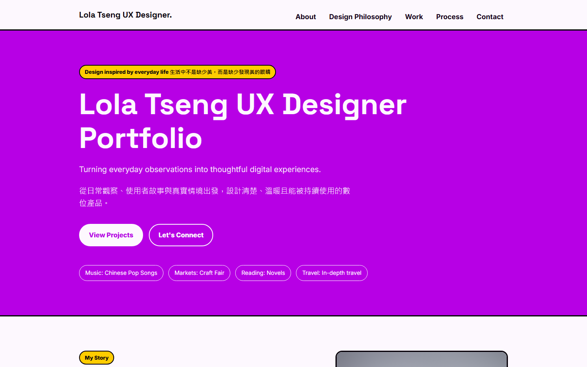
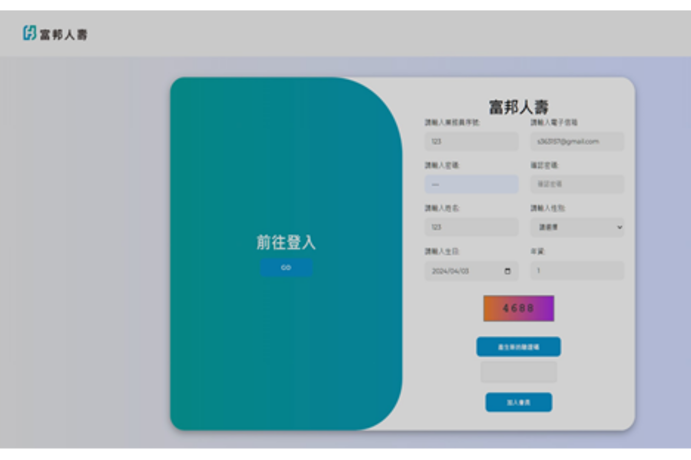
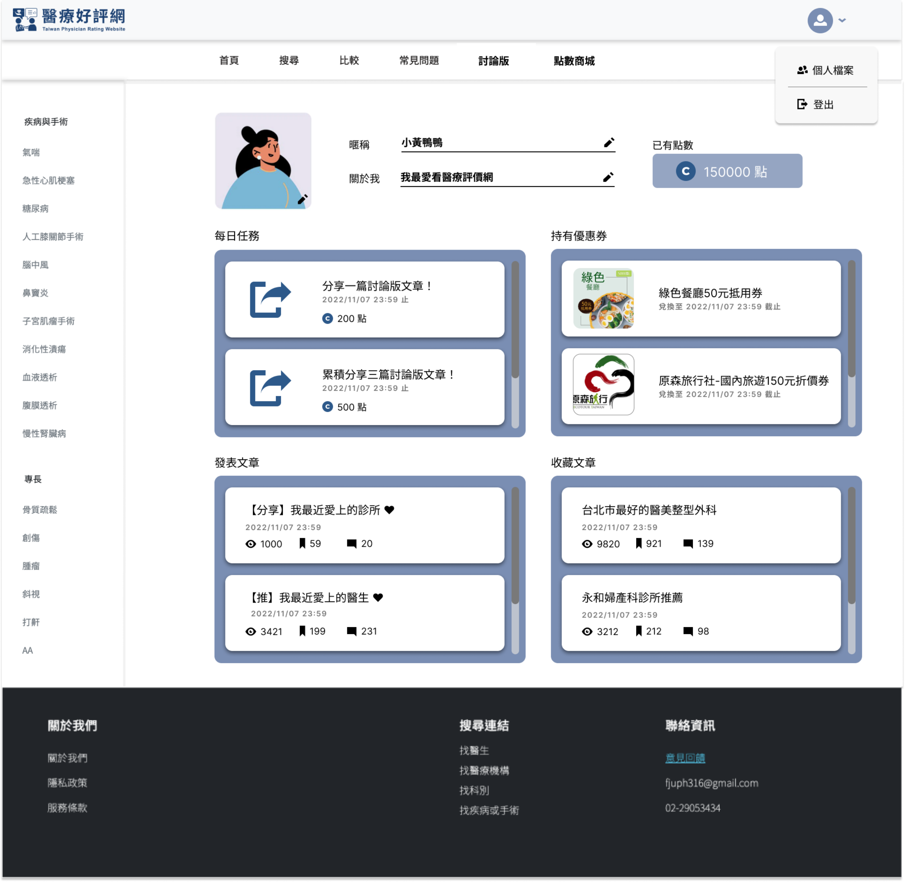
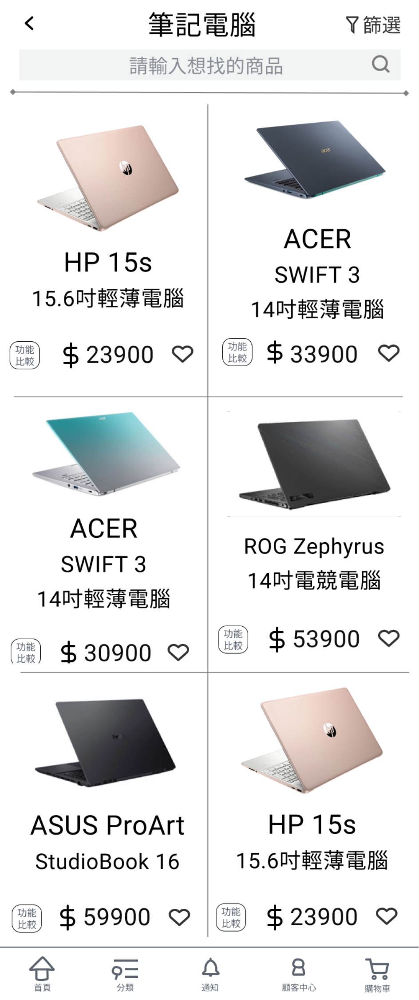

Portfolio System
以 Markdown 管理作品集內容，透過自製的 build 腳本自動產生網頁，降低更新成本並保留視覺一致性。
Turning everyday observations into thoughtful digital experiences.
從日常觀察、使用者故事與真實情境出發，設計清楚、溫暖且能被持續使用的數位產品。
6 個作品・InnoConnect+ 企業金獎・AI 協作打造 2 個真實產品

以 Markdown 管理作品集內容，透過自製的 build 腳本自動產生網頁，降低更新成本並保留視覺一致性。

以產品設計流程，結合 UX 方法與 AI Vibe Coding 完成一個簡易紀錄女性生理期的網站。

與業師合作開發 AI 保險介面，運用決策樹加速業務員找到適合推銷給顧客的商品。

完成醫療平台原型，通過 3 位使用者測試驗證導覽結構，提升搜尋任務成功率。

運用遊戲化八角框架設計出讓使用者願意持續使用的衛教 APP，獲 InnoConnect+ 企業金獎。

針對電商比較功能重新設計介面，任務完成率高達 97%，資訊可讀性顯著改善。
從 0 到 1 打造兩個真實上線的產品——這個作品集網站與 Petal Log，涵蓋需求釐清、介面設計到前端實作的完整流程。
2026.06 開始同步進行 Google 數位人才探索計畫與 Claude 101 課程，把單次的 Vibe Coding 經驗整理成可複製、可延伸的方法。
把 AI 當討論夥伴：先想清楚問題框架，再讓 AI 生成內容；結果跟預期不同就換個提問角度，滾動式調整而不是砍掉重練。也因此更在意 AI 常見的誤解與答非所問——這其實是值得被設計解決的人機互動問題，換個切入點提問往往就能找到答案，而不只是「AI 不夠聰明」。
做決定時，我習慣先自己想透多個方向，再找人討論，從交集裡收斂出答案；真心相信一件事時，我不會勉強妥協，而是花時間說服大家，讓共識剛好落在我原本想的方向。
朋友常吐槽我「東西很多」，但擺放一定有自己的邏輯——這種「什麼都想收藏、但收藏要有系統」的個性，大概也是我一頭栽進資訊架構的原因。
設計上，我相信先聽懂需求比急著提出解法更重要，原型要快、技術要盡量隱形，好的體驗往往藏在日常生活的小細節裡。
目前聚焦在 UX Design 與 AI 應用，期待把技術轉化成更直覺的使用經驗。